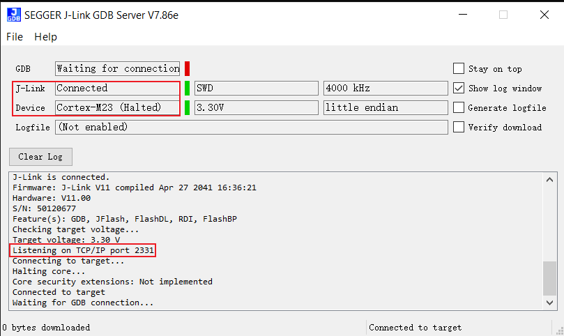

J-Link Hardware Connection
Refer to the following diagram to connect J-Link’s SWCLK and SWDIO to the SoC’s SWD CLK and SWD DATA, then connect J-Link to the PC.
{kind=link}
Wiring diagram of connecting J-Link to SWD
Note
The J-Link version must be v9 or higher.
J-Link Software Connection & Configuration
Download and install the latest GDB Server from SEGGER official website:
Connect J-Link
Double-click {SDK}\amebadplus_gcc_project\utils\jlink_script\cm4_jlink.bat. As shown below, confirm successful connection between KM4 and J-Link:

Caution
Edit
cm4_jlink.batto modify paths for JLinkGDBServer.exe and JLink.exe as neededKeep this window open for subsequent operations
Configure J-Link
Open a new terminal and navigate to
project_km4directoryExecute command:
$ make setup GDB_SERVER=jlink
Operation example:
{kind=link}
Connect J-Link
Double-click {SDK}\amebadplus_gcc_project\utils\jlink_script\cm0_jlink.bat. As shown below, confirm successful connection between KM0 and J-Link:
{kind=link}
Configure J-Link
Open a new terminal and navigate to
project_km0directoryExecute command:
$ make setup GDB_SERVER=jlink
Operation example:
{kind=link}
Connect J-Link
Double-click {SDK}\amebalite_gcc_project\utils\jlink_script\km4_jlink_combination.bat. Confirm KM4-JLink connection as shown:
{kind=link}
Caution
Edit
km4_jlink_combination.batto modify JLinkGDBServer.exe/JLink.exe pathsKeep this window open for subsequent operations
Configure J-Link
Open new terminal and navigate to
project_km4Execute command:
$ make setup GDB_SERVER=jlink
Operation example:
{kind=link}
{kind=link}
{kind=link}
Connect J-Link
Double-click {SDK}\amebalite_gcc_project\utils\jlink_script\km4_jlink_combination.bat. Confirm KM4-JLink connection as shown:
Caution
Edit
km4_jlink_combination.batto modify JLinkGDBServer.exe/JLink.exe pathsKeep this window open for subsequent operations
Configure J-Link
Open new terminal and navigate to
project_km4Execute command:
$ make setup GDB_SERVER=jlink
Operation example:
CA32 features symmetric dual-core architecture supporting independent debugging. Core-specific scripts:
ca32_jlink_core0.bat(default port 2337)ca32_jlink_core1.bat(default port 2339)
Caution
Enabling GDB server for core1 may cause both cores to halt on breakpoints/watchpoints, but resuming core1 won’t trigger core0 (J-Link limitation)
To debug cores independently, comment EnabelCrossTrigger() in AP3_CA32_Corex.JLinkScript:
void InitTarget(void) {
Report("******************************************************");
Report("J-Link script: AmebaSmart (Cortex-A32 CPU0) J-Link script");
Report("******************************************************");
/* … */
//EnabelCrossTrigger(); // Comment as needed
}
Connect J-Link
Core0 connection:
Double-click
{SDK}\amebasmart_gcc_project\utils\jlink_script\ca32_jlink_core0.bat
Core1 connection:
Double-click
{SDK}\amebasmart_gcc_project\utils\jlink_script\ca32_jlink_core1.bat
- Configure J-Link
TBD
- Connect J-Link
Double-click
{SDK}\amebasmart_gcc_project\utils\jlink_script\cm4_jlink.bat
Caution
Edit
cm4_jlink.batto modify JLinkGDBServer.exe/JLink.exe pathsKeep this window open for subsequent operations
- Configure J-Link
Connect J-Link
Double-click
{SDK}\amebasmart_gcc_project\utils\jlink_script\cm0_jlink.bat
{kind=link}
Configure J-Link
Deploy GDB Server with these steps:
Download latest J-Link package
Execute installation command:
$ dpkg -i jlink_6.0.7_x86_64.deb
Verify installation:
/opt/SEGGER/JLink/JLinkGDBServer
Connect J-Link
Open a new terminal and navigate to directory
/amebadplus_gcc_project/utils/jlink_scriptExecute the command:
$/opt/SEGGER/JLink/JLinkGDBServer -select USB-device Cortex-M33 -if SWD -scriptfile AP2_KM4.JLinkScript port 2335

{kind=link}
Configure J-Link
Open a new terminal and navigate to directory
project_km4Execute the command:
$make setup GDB_SERVER=jlink

Connect J-Link
Open a new terminal and navigate to directory
/amebadplus_gcc_project/utils/jlink_scriptExecute the command:
$/opt/SEGGER/JLink/JLinkGDBServer -select USB -device Cortex-M23 -if SWD -scriptfile AP1_KM0.JLinkScript port 2331
{kind=link}

Configure J-Link
Open a new terminal and navigate to directory
project_km0Execute the command:
$make setup GDB_SERVER=jlink
{kind=link}
Connect J-Link
Open a new terminal and navigate to directory
amebalite_gcc_project/utils/jlink_scriptExecute the command:
$/opt/SEGGER/JLink/JLinkGDBServer -select USB-device Cortex-M33 -if SWD -scriptfile AP0_KM4.JLinkScript port 2335
{kind=link}
{kind=link}
Configure J-Link
Open a new terminal and navigate to directory
project_km4Execute the command:
$make setup GDB_SERVER=jlink

KM4 Connection
Open a new terminal and navigate to directory
amebalite_gcc_project/utils/jlink_scriptExecute the command:
$/opt/SEGGER/JLink/JLinkExe -device Cortex-M33 -if swd -autoconnect 1 -speed 1000 -JLinkScriptFile KM4_SEL.JLinkScript
{kind=link}

KR4 Connection
After completing KM4 connection, execute in the same directory:
$/opt/SEGGER/JLink/JLinkGDBServer -select USB-device RV32 -if cjtag -port 2331Note: Keep this terminal open for KR4 debugging (KM4 terminal can be closed)

{kind=link}
Configure J-Link
Open a new terminal and navigate to directory
project_kr4Execute the command:
$make setup GDB_SERVER=jlink

Connect J-Link
Open a new terminal and navigate to directory
amebalite_gcc_project/utils/jlink_scriptExecute the command:
$/opt/SEGGER/JLink/JLinkGDBServer -select USB-device Cortex-M33 -if SWD -scriptfile AP0_KM4.JLinkScript port 2335
Configure J-Link
Open a new terminal and navigate to directory
project_km4Execute the command:
$make setup GDB_SERVER=jlink
KM4 Connection
Open a new terminal and navigate to directory
amebalite_gcc_project/utils/jlink_scriptExecute the command:
$/opt/SEGGER/JLink/JLinkExe -device Cortex-M33 -if swd -autoconnect 1 -speed 1000 -JLinkScriptFile KM4_SEL.JLinkScript
KR4 Connection
After completing KM4 connection, execute in the same directory:
$/opt/SEGGER/JLink/JLinkGDBServer -select USB-device RV32 -if cjtag -port 2331Note: Keep this terminal open for KR4 debugging (KM4 terminal can be closed)
Configure J-Link
Open a new terminal and navigate to directory
project_kr4Execute the command:
$make setup GDB_SERVER=jlink
Open a new terminal and navigate to the directory
{SDK}/amebasmart_gcc_project/utils/jlink_scriptExecute the command:
$/opt/SEGGER/JLink/JLinkGDBServer -device cortex-a32 -if SWD -scriptfile AP3_CA32_Core0.JLinkScript -port 2337
{kind=link}
Open a new terminal and navigate to the directory
{SDK}/amebasmart_gcc_project/utils/jlink_scriptExecute the command:
$/opt/SEGGER/JLink/JLinkGDBServer -device cortex-a32 -if SWD -scriptfile AP3_CA32_Core1.JLinkScript -port 2339

Open a new terminal and navigate to the directory
{SDK}/amebasmart_gcc_project/utils/jlink_scriptExecute the command:
$/opt/SEGGER/JLink/JLinkGDBServer -device cortex-m33 -if SWD -scriptfile AP1_KM4.JLinkScript -port 2335

Open a new terminal and navigate to the directory
{SDK}/amebasmart_gcc_project/utils/jlink_scriptExecute the command:
$/opt/SEGGER/JLink/JLinkGDBServer -device cortex-m23 -if SWD -scriptfile AP0_KM0.JLinkScript -port 2331

Firmware Burning via J-Link
We recommend using Realtek’s Image Tool software for firmware download. For more information, please refer to Image Tool.
If you must use J-Link to download the firmware, please follow the instructions below:
Compile the image (refer to Building Code) and connect J-Link
Enter the
build.py -gdbcommand to start the download. The firmware will be downloaded to Flash, and the process will take a few seconds, as shown below:

Downloading firmware to Flash

Successful download log prompt
To confirm that the firmware has been correctly downloaded, you can select verify download before downloading. During the firmware download, there will be a verified OK log prompt.

Verify download
After the download is complete, press the Reset button to see the device boot with the new firmware.
Debug Mode Entry Process
Build Image and Connect J-Link
Execute Debug Commands:
Navigate to SDK root directory
Run
build.py -debugSelect device-specific command:
KM4:
"{Jlink_path}\JLink.exe" -device Cortex-M33 -if SWD -speed 4000 -autoconnect 1
KM0:
"{Jlink_path}\JLink.exe" -device Cortex-M23 -if SWD -speed 4000 -autoconnect 1
KM4:
"{Jlink_path}\JLink.exe" -device Cortex-M33 -if SWD -speed 4000 -autoconnect 1
KR4:
First:
"{Jlink_path}\JLink.exe" -device Cortex-M33 -if SWD -speed 4000 -autoconnect 1 -JLinkScriptFile {script_path}\KM4_SEL.JLinkScript
Then:
"{Jlink_path}\JLink.exe" -device RV32 -if cjtag -speed 4000 -JTAGConf -1,-1 -autoconnect 1
KR4->KM4:
First:
"{Jlink_path}\JLink.exe" -device RV32 -if cjtag -speed 4000 -JTAGConf -1,-1 -JLinkScriptFile {script_path}\KR4_DMI.JLinkScript
Then:
"{Jlink_path}\JLink.exe" -device Cortex-M33 -if SWD -speed 4000 -autoconnect 1
KM4:
"{Jlink_path}\JLink.exe" -device Cortex-M33 -if SWD -speed 4000 -autoconnect 1
KR4:
First:
"{Jlink_path}\JLink.exe" -device Cortex-M33 -if SWD -speed 4000 -autoconnect 1 -JLinkScriptFile {script_path}\KM4_SEL.JLinkScript
Then:
"{Jlink_path}\JLink.exe" -device RV32 -if cjtag -speed 4000 -JTAGConf -1,-1 -autoconnect 1
KR4->KM4:
First:
"{Jlink_path}\JLink.exe" -device RV32 -if cjtag -speed 4000 -JTAGConf -1,-1 -JLinkScriptFile {script_path}\KR4_DMI.JLinkScript
Then:
"{Jlink_path}\JLink.exe" -device Cortex-M33 -if SWD -speed 4000 -autoconnect 1
KM4:
"{Jlink_path}\JLink.exe" -device Cortex-M33 -if SWD -speed 4000 -autoconnect 1 -JLinkScriptFile {script_path}\AP1_KM4.JLinkScript
KM0:
"{Jlink_path}\JLink.exe" -device Cortex-M23 -if SWD -speed 4000 -autoconnect 1 -JLinkScriptFile {script_path}\AP0_KM0.JLinkScript
CA32 core0:
"{Jlink_path}\JLink.exe" -device Cortex-A32 -if SWD -speed 4000 -autoconnect 1 -JLinkScriptFile {script_path}\AP3_CA32_Core0.JLinkScript
CA32 core1:
"{Jlink_path}\JLink.exe" -device Cortex-A32 -if SWD -speed 4000 -autoconnect 1 -JLinkScriptFile {script_path}\AP3_CA32_Core1.JlinkScript
Note
{Jlink_path}: J-Link installation path (Default:C:\Program Files (x86)\SEGGER\JLink){script_path}:{SDK}\amebaxxx_gcc_project\utils\jlink_script
GDB Core Command Set
Command (Full) |
Shortcut |
Syntax |
Description |
|---|---|---|---|
Halt |
H |
Suspend CPU execution |
|
Go |
G |
Resume CPU execution |
|
Mem |
/ |
Mem <Address> <ByteCount> |
Read memory (ASCII format) |
SaveBin |
/ |
SaveBin <File> <Address> <ByteCount> |
Dump memory to binary file |
Exit |
/ |
Disconnect J-Link |
Official documentation: https://wiki.segger.com/J-Link_Commander
Note
Track PC values via multiple
H/GexecutionsUse
mem <sp_address>to inspect call stack
GDB Debugger Guide
GNU Debugger enables runtime state inspection and error tracing (Reference: Debug Mode Entry Process)
Complete documentation: GDB User Manual
Function Module |
Command |
Operation Guide |
|---|---|---|
Breakpoint Management |
break (b) |
Set execution pause points |
Data Watchpoints |
watch |
Monitor variable changes (watch/rwatch/awatch) |
Note Recommended watch scope <20 bytes |
||
Breakpoint List |
info |
Display active breakpoints/watchpoints |
Breakpoint Removal |
delete (d) |
Remove specified breakpoint |
Execution Resume |
continue (c)| Continue program execution |
|
Step Into |
step (s) |
Enter function execution |
Step Over |
next (n) |
Execute current line and jump to next |
Debug Session Exit |
quit (q) |
Terminate debugging session |
Call Trace |
backtrace (bt)| Display function call stack |
|
Source Code View |
list (l) |
Display contextual code |
Data Inspection |
print (p) |
Output variable/expression values |